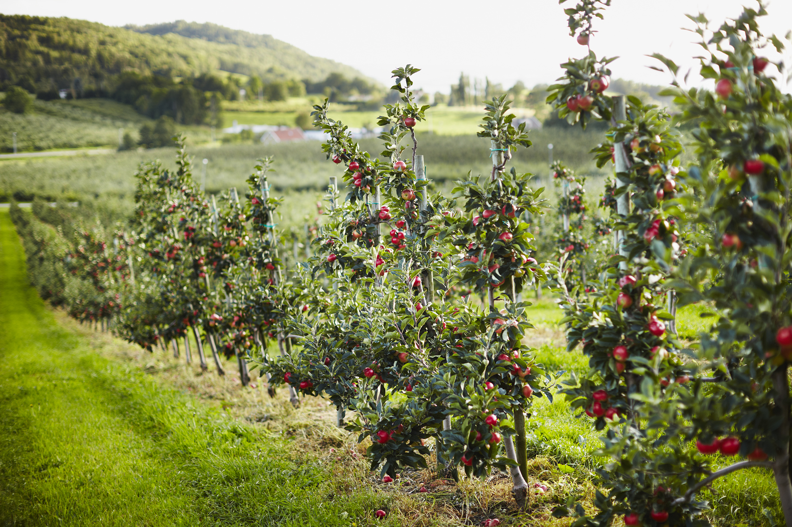
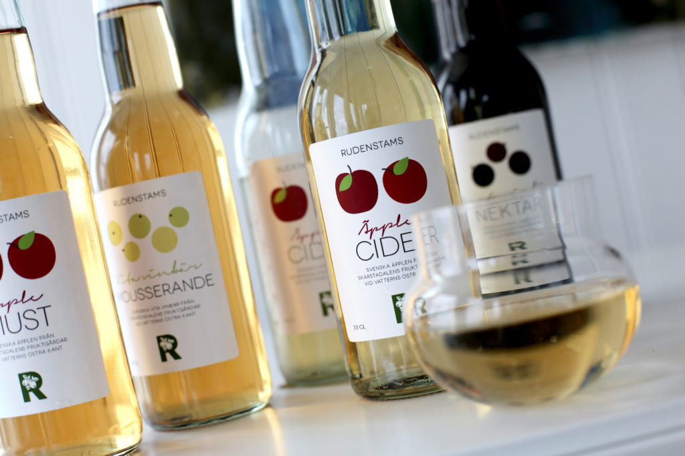
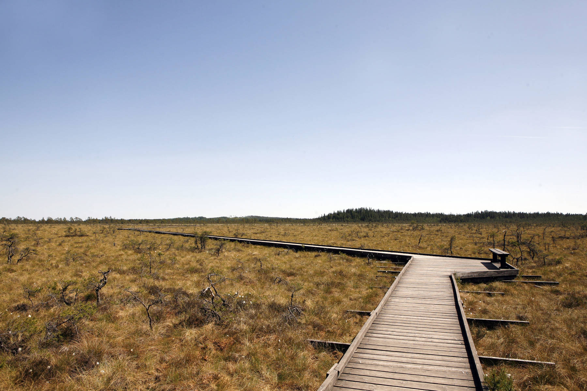
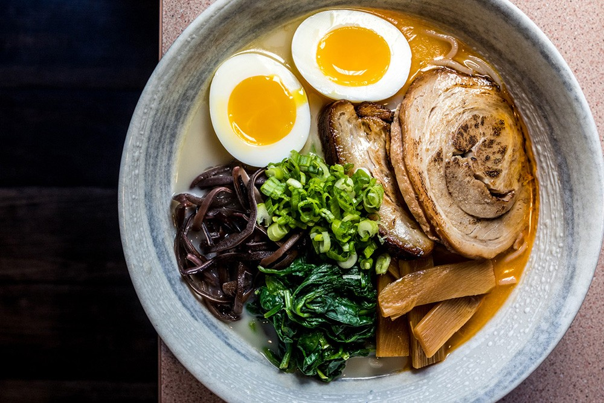
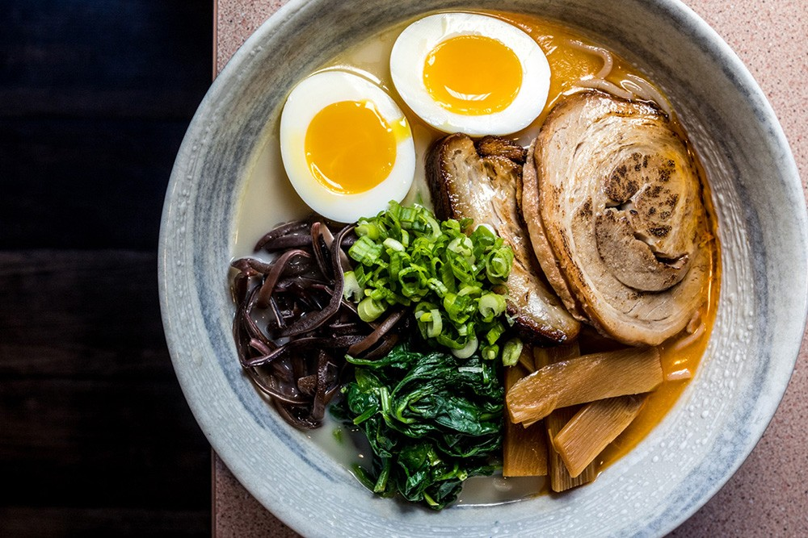

First thing that I liked about Jönköping despite its calmness and coziness, is that it is surrounded by water. Lakes in Jönköping are really beautiful and I enjoy going for a walk along the lake, since it helps me to relax and clear my head after a long day. Also, there is a nice promenade, where you can sit and enjoy the view.
Talking about nature it is great to mention Apple Valley. It is located in the North of Huskvarna in a small community of Kaxholmen. There you can find apple orchards, Rudenstam and Vistakulle fruktodling with the Gårdsrosteriet Vista. Garden shop Tengblads and the beauty salon Min Stund. Opposite the Hunneryd bath in the community you will find the interior design shop and the café Grafitgrå.
In the middle of the orchard you will find Rudenstam's farm shop with its own cultivated fruit, drinks from their own farm and locally produced goods. The farm shop sells self-produced and manufactured products, but also locally produced meat, fish and cheese. In the farm shop there is also a snack where delicious delicacies and today's lunch are offered.
Less than ten kilometers west of Jönköping, you will find the 3,000-hectare Dumme Mosse Naturreservat, one of the last large and almost untouched moorlands in Småland. I think it’s a fascinating place to visit, because the nature there is incredible.
 
